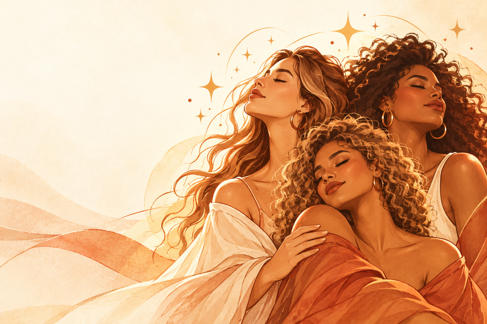
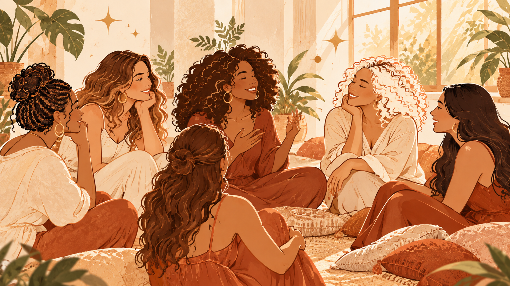
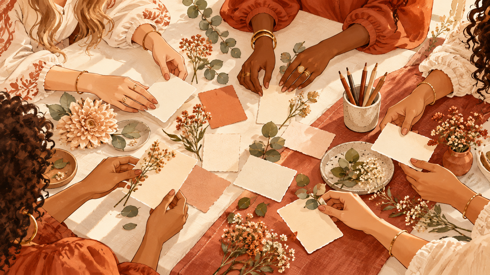

Uma comunidade para mulheres
Mulheres Luminosas
Autoconhecimento e inteligência emocional entre mulheres. Reflexões, pequenas práticas e conversas com acolhimento.
Sobre o projeto
Um espaço para se escutar e caminhar juntas.
Mulheres Luminosas é um grupo de autoconhecimento e inteligência emocional conduzido pela Psicóloga e Neuropsicóloga Neumar Félix. A proposta é compartilhar reflexões, experiências e pequenas práticas que ajudam a olhar para si com mais consciência.
O encontro acontece no ritmo de cada mulher, com escuta, respeito e acolhimento.
É o seu momento.”

Como surgiu
Uma ideia que encontrou espaço para florescer.
O projeto já existia antes da fase atual no WhatsApp. Em setembro de 2026, começou uma nova etapa: uma rotina de conteúdos, pequenas práticas e encontros semanais para compartilhar experiências de autoconhecimento e inteligência emocional.
Reflexões pela manhã
Um convite para observar o tema da semana.
Práticas ao longo do dia
Exercícios breves para levar a reflexão para a vida cotidiana.
Encontro de quarta
Um espaço aberto para conversar e fechar a semana juntas.
Do despertar à conversa
Nossa semana juntas
Uma proposta simples e significativa para acompanhar todos os dias.
Quinta Despertar da Mulher Luminosa
Sexta Uma Pausa para Você
Sábado Mensagem de inspiração
Domingo Descanso
Segunda Minuto da Mulher Luminosa
Terça Pílula Luminar
Quarta Conversa Luminosa, às 20h

Pílula Luminar
PARE · PERCEBA · ESCOLHA
Uma pausa curta para sair do automático e perceber o que está acontecendo por dentro.
Experimente agora
Sem pressa. Você pode seguir no seu próprio ritmo.
O encontro da semana
Conversa Luminosa
Uma hora de encontro para revisitar a temática, trocar experiências e reconhecer o que cada uma leva consigo. O espaço se abre para as partilhas e se fecha com acolhimento.
Como funcionaUm convite à escrita
Caderno Luminoso
Um lugar só seu para registrar pensamentos, emoções, descobertas e pequenos passos. Pode ser um caderno, folhas soltas ou o formato que fizer sentido para você.
Ver as práticas da semanaPerguntas frequentes
Um pouco mais sobre o grupo.
O grupo é para terapia?
Não!. É um espaço de autoconhecimento e desenvolvimento de inteligênciaa emocional. O grupo não é terapia mas é terapêutico!.
Preciso participar todos os dias?
Não!. Cada Luminosa participa no seu tempo. As reflexões e práticas são um convite para experimentar o seu mundo interior no ritmo que é possível.
Como funciona a Conversa Luminosa?
O grupo é aberto às quarta-feiras, às 20h, para partilha sobre os temas desenvolvidos durante a semana.
Do que eu preciso para participar do grupo?
Sua vontade, sua luz e um caderno para as atividades práticas!.
Seu momento começa com uma pausa
Caminhar juntas ilumina o caminho.
Conheça o projeto, explore as práticas e descubra o que faz sentido para você.
Voltar ao início